Esta categoria reúne ferramentas de Inteligência Artificial que podem apoiar a mediação pedagógica durante a aula, contribuindo para tornar explicações mais visuais, dinâmicas e interativas. Esses recursos permitem ao professor enriquecer a apresentação de conteúdos por meio de imagens, vídeos, animações e outros materiais que favorecem o engajamento e a compreensão dos estudantes.
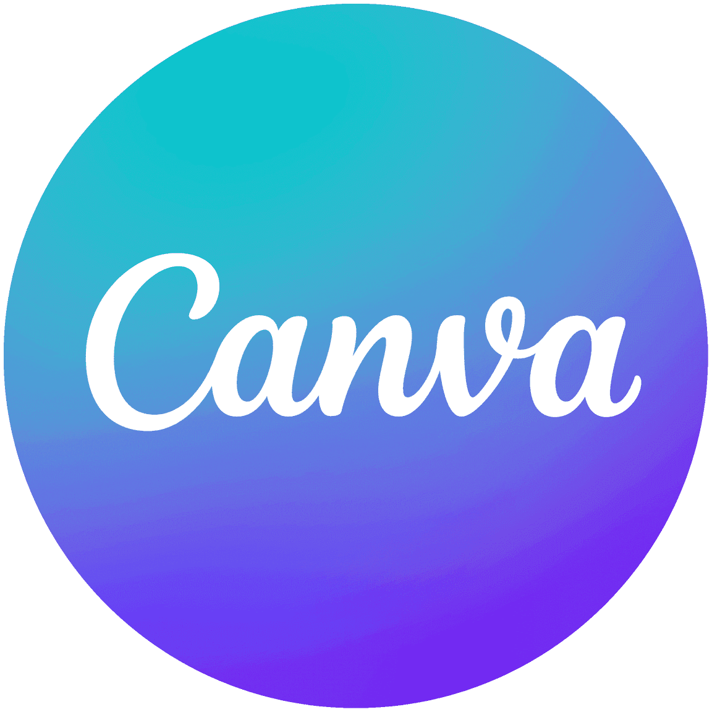
Crie apresentações, infográficos e materiais visuais para apoiar explicações em aula.
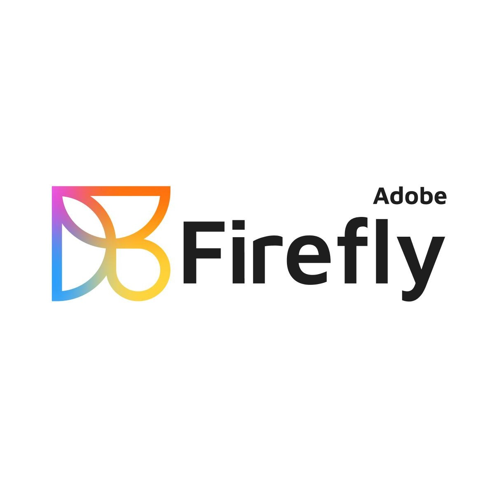
Gere imagens e elementos visuais para enriquecer conteúdos e recursos didáticos.
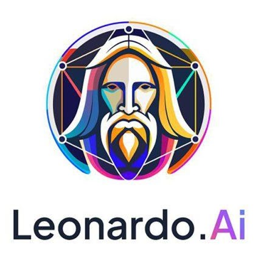
Explore a criação de ilustrações e imagens para tornar a mediação mais atrativa.
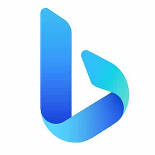
Produza imagens a partir de descrições textuais para apoiar conceitos e exemplos.
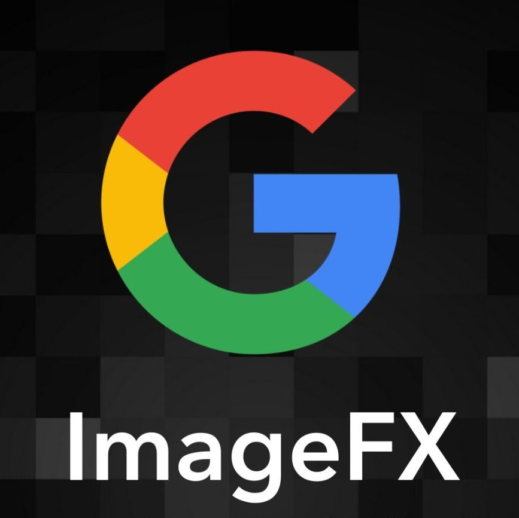
Experimente gerar imagens para complementar explicações e atividades em sala.
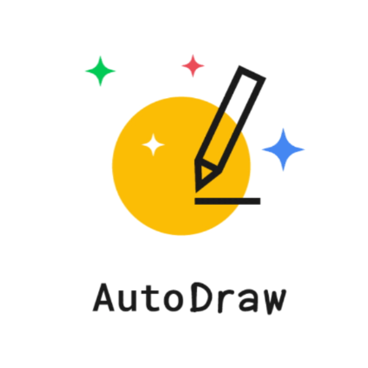
Desenvolva desenhos e recursos visuais com agilidade para apoiar a aula.
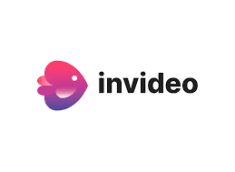
Transforme ideias em vídeos curtos para dinamizar momentos de exposição de conteúdo.
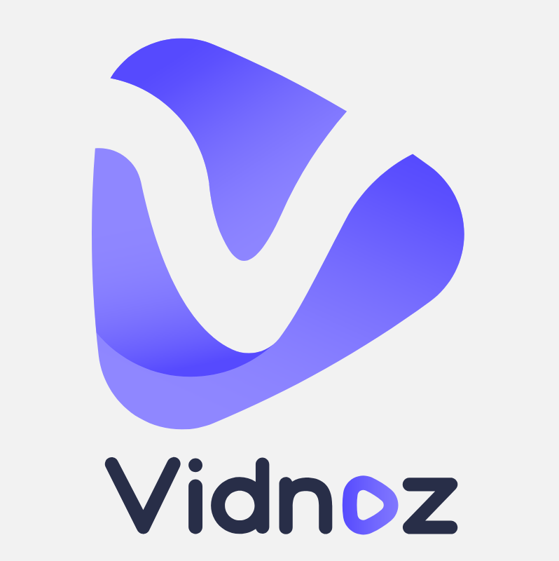
Crie vídeos e apresentações audiovisuais para ampliar a mediação pedagógica.
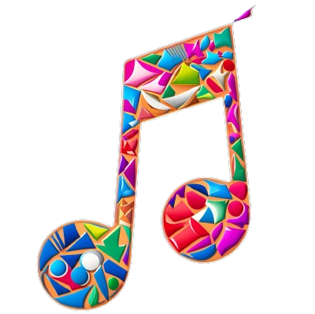
Utilize músicas geradas por IA como recurso criativo para introduzir ou revisar temas.
Experimente composições musicais para atividades lúdicas e contextualização de conteúdos.
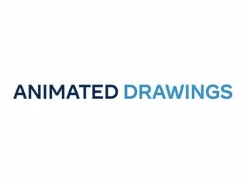
Anime desenhos e produções visuais para tornar a aprendizagem mais envolvente.
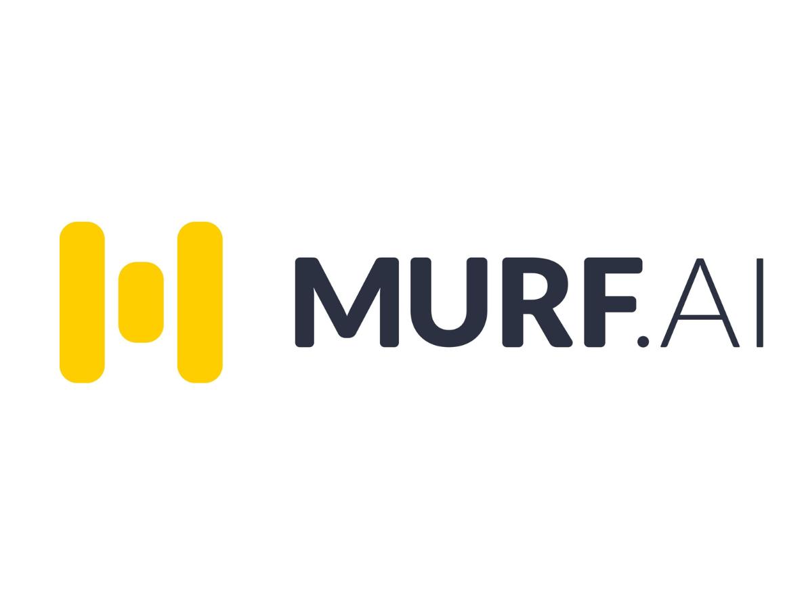
Produza narrações em áudio para apoiar vídeos, explicações e materiais multimídia.
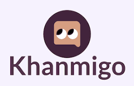
Explore possibilidades de apoio interativo às explicações e à participação dos estudantes.